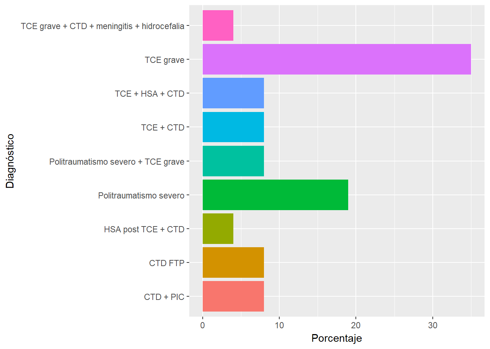
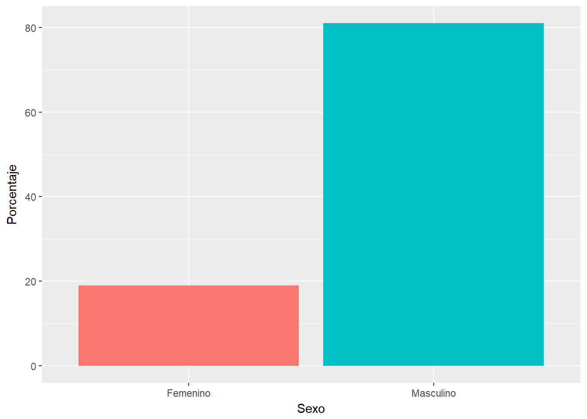
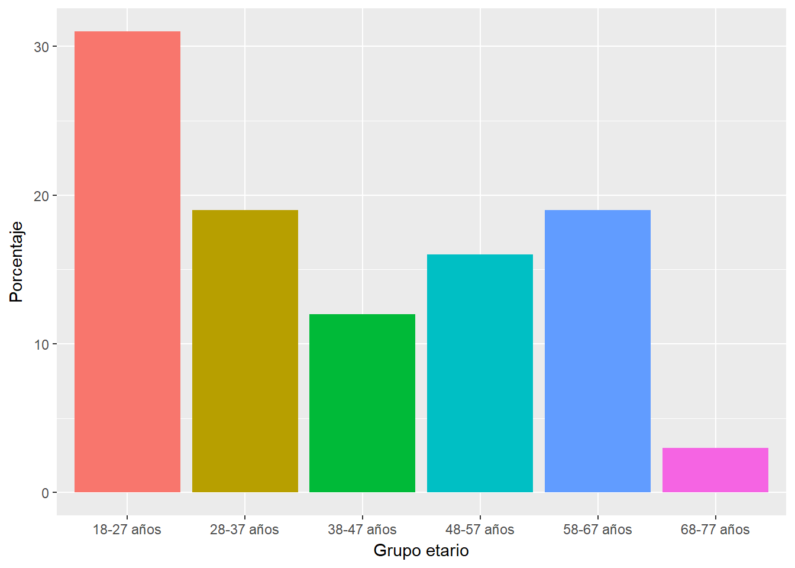
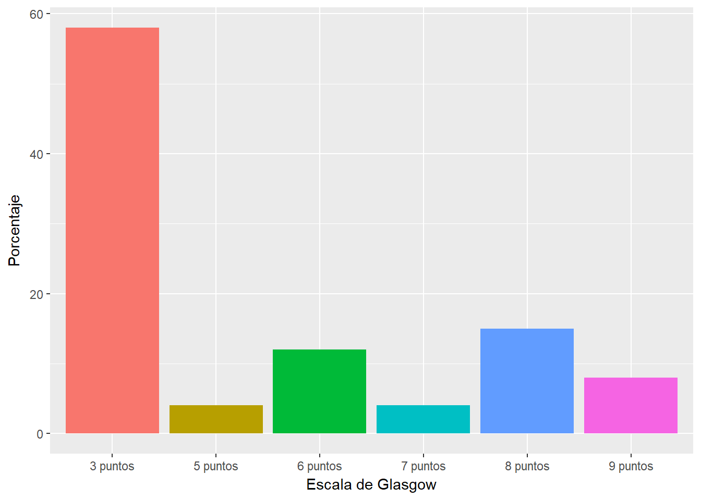
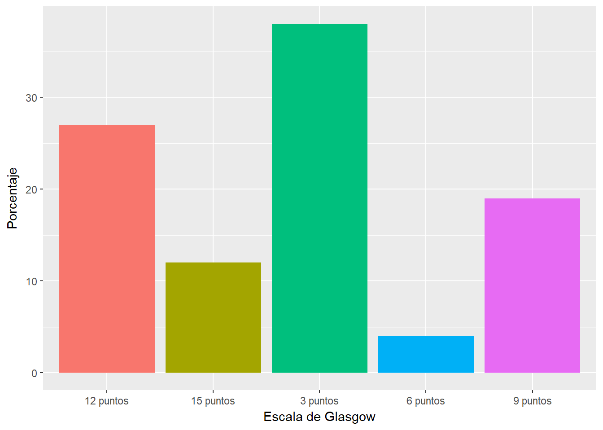
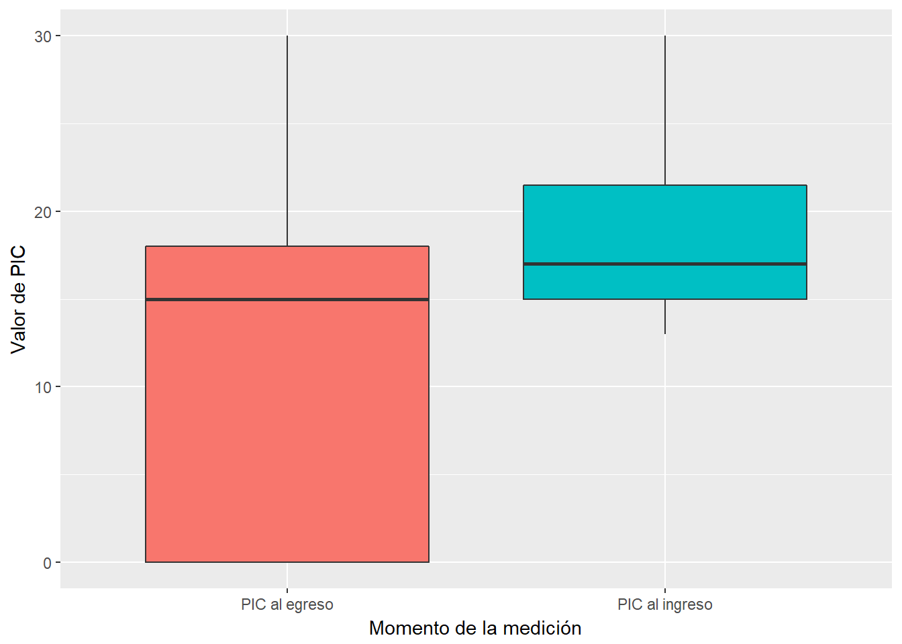
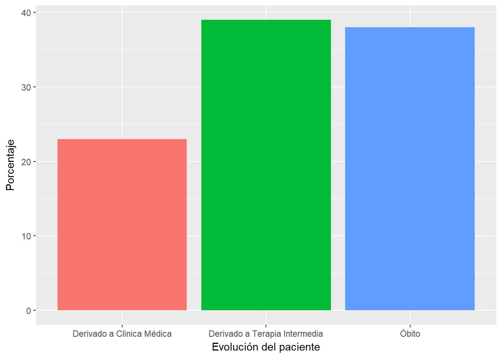

Palabras claves: TCE, fisioterapia respiratoria, craniectomía descompresiva, UCI-A.
Uno de los problemas más graves que afecta a la humanidad en la actualidad es el de los accidentes de tránsito, por su gran impacto negativo en la salud pública mundial (MOPC 8). La gran cantidad de accidentes de tránsito y las consecuencias que estos acarrean como ser el traumatismo craneoencefálico (TCE), son actualmente la constante en nuestro medio; en el Hospital Nacional de Itauguá las víctimas de dichos accidentes son hospitalizados, una gran parte de los mismos requieren de medidas de emergencias como ser la craneotomía descompresiva; estos pacientes además son propensos a sufrir infecciones intrahospitalarias, más aún derivadas con foco pulmonar que producen abundante cantidad de esputo aumentando el riesgo que, sumado a la inmovilidad del paciente, pueden contribuir a complicaciones respiratorias severas.
El conocimiento sobre las características generales del manejo de las vías aéreas en pacientes con TCE permitiría identificar lineamientos adecuados para el tratamiento integral de este tipo de pacientes, hospitalizados en el Hospital Nacional de Itauguá durante el periodo de enero a diciembre del 2014.
Las características descritas en la investigación serán de gran beneficio tanto para los pacientes hospitalizados así también para mejorar el servicio y el manejo de las vías aéreas, la obtención de mejores resultados en cuanto a la evolución de los pacientes, y la prevención de nuevas complicaciones.
Por todo lo mencionado se traza el objetivo principal de la investigación consistente en identificar las características generales del manejo de las vías aéreas en la unidad de cuidados críticos en pacientes con craneotomía descompresiva en el Hospital Nacional de Itauguá.
Uno de los problemas más graves en la actualidad es el de los accidentes de tránsito, por su gran impacto en la salud pública mundial. Los mismos ocasionan la muerte de aproximadamente 1.2 millones de personas al año y causan lesiones graves a una población comprendida entre 20 millones y 50 millones de personas cada año (MOPC 8). En América Latina y el Caribe se tiene la tasa más alta de mortalidad a causa de los traumatismos por accidentes de tránsito en todo el mundo: 26 muertes por cada 100,000 habitantes. El Paraguay merece atención prioritaria, ya que presenta altos índices de mortalidad y morbilidad ocasionada por la inseguridad vial. Se estima que anualmente perecen 1,500 personas y que aproximadamente 12,000 resultan heridas por accidentes de tránsito (Arias 16).
Los accidentes de tránsito y su complicación más frecuente el TCE son la constante en nuestro medio (Arias 16); en el Hospital Nacional de Itauguá muchos pacientes víctimas de tales incidentes son hospitalizados, una gran parte de los mismos requieren de medidas de emergencias como ser la craneotomía descompresiva; estos pacientes además son propensos a sufrir infecciones intrahospitalarias. Debido a estas infecciones, muchas de las mismas con foco pulmonar producen abundante producción de esputo, que sumado a la inmovilidad de los pacientes es factible de tener complicaciones respiratorias severas.
Las características generales del manejo de las vías aéreas en pacientes con craneotomía descompresiva permitirían identificar cuáles serían las medidas adecuadas de tratamiento para este tipo de pacientes, por lo tanto, se desglosan las siguientes preguntas de investigación: ¿Cuáles son las características generales del manejo de las vías aéreas en la unidad de cuidados críticos en pacientes con craneotomía descompresiva en el Hospital Nacional de Itauguá, durante el periodo de enero a diciembre del 2014? ¿Cuáles son los parámetros clínicos que se deberían tener en cuenta para la implementación de un tratamiento adecuado?
La idea de investigación sobre las características generales del manejo de las vías aéreas en la unidad de cuidados críticos en el paciente con craneotomía descompresiva surge como una inquietud acerca de las características del manejo habitual, en las cuales no se tienen en cuenta parámetros ni indicadores específicos para efectuar las maniobras kinésicas respiratorias con el fin de obtener resultados favorables y prevenir las complicaciones, en este tipo de pacientes. Debido al daño neurológico, se desarrolla un complejo ciclo fisiopatológico donde el daño cerebral da como resultado una disminución del volumen pulmonar y sus consecuencias que pueden derivar en una infección, así mismo, se produce una alteración de los reflejos de la vía aérea alta, llevando a una necesidad imperiosa de aspiración de secreciones y por consiguiente múltiples exposiciones con riesgo de contraer infecciones.
La identificación de las características del manejo de las vías aéreas en la unidad de cuidados intensivos será de gran beneficio tanto como para los pacientes hospitalizados y así como para mejorar el servicio y la obtención de mejores resultados. Además la evolución del paciente podría incluir avances en el manejo de las vías aéreas, mejorar la rehabilitación de la función pulmonar y prevenir nuevas complicaciones.
El cráneo es una estructura rígida recubierta por cuero cabelludo y su contenido está compuesto por meninges, encéfalo, líquido cefalorraquídeo y sangre. La estructura que recubre al esqueleto óseo es el cuero cabelludo, estructura muy generosamente irrigada, compuesta por cinco capas: piel, tejido graso subcutáneo, aponeurosis, tejido areolar laxo y periostio. La laxitud del tejido areolar generalmente es causante de la mayoría de las lesiones por arrancamiento que ocasionalmente pueden causar importantes hemorragias. La bóveda craneal descansa sobre la denominada base del cráneo, de superficie irregular, lo que provoca con frecuencia lesiones por mecanismos de aceleración-desaceleración. Contiene, además del encéfalo, órganos sensitivos muy importantes como los ojos y los oídos. Las fracturas del esqueleto pueden involucrar a estas estructuras, que deben ser adecuadamente valoradas.
Las meninges son las membranas que protegen al SNC. Externamente, adherida a la pared interna ósea se encuentra la duramadre. Entre ésta y la superficie interna del cráneo discurren las arterias meníngeas, en el llamado espacio epidural, cuya rotura provoca los hematomas epidurales. La duramadre produce un repliegue formando los senos venosos: el más importante es el seno venoso longitudinal superior, lugar frecuente de lesiones. Por debajo de la duramadre, entre ésta y la aracnoides, se encuentra el espacio subdural que alberga las venas comunicantes, cuya laceración da lugar a los hematomas subdurales.
En el espacio ocupado entre la aracnoides y la piamadre, membrana adherida a la corteza cerebral, se encuentra el espacio subaracnoideo por el que circula el líquido cefalorraquídeo y es el lugar de mayor incidencia de hemorragias subaracnoideas. En el encéfalo se logra distinguir cerebro, cerebelo y tronco de encéfalo. El cerebro se divide en dos hemisferios, los cuales están separados por un repliegue de la duramadre, la hoz del cerebro. En el tronco de encéfalo, se encuentran los centros cardiorrespiratorios y el sistema reticular activador ascendente, responsable del estado de vigilia del individuo, cuya afectación es la responsable de la pérdida de conciencia que sigue al traumatismo.
El cerebelo, se encarga fundamentalmente de la coordinación y el equilibrio. La cavidad craneal está dividida horizontalmente en dos zonas a través del tentorio, quedando así organizado en zona supratentorial que contiene a la fosa anterior y media, y la zona infratentorial que contiene a la fosa posterior. La compresión de las fibras parasimpáticas, por un aumento de presión supratentorial, por hemorragia o edema, con herniación del uncus producirá la observación de midriasis del mismo lado, generalmente acompañada de hemiparesia contralateral por compresión del pedúnculo cerebral. Este hecho frecuentemente ocurre en los TCE graves (Morales 39).
El sistema nervioso y el sistema endocrino controlan las funciones del organismo. El sistema nervioso está compuesto básicamente por células especializadas cuya función es recibir estímulos sensitivos y trasmitirlos a los órganos efectores, sean musculares o glandulares. Los estímulos sensitivos que se originan fuera o dentro del organismo se correlacionan dentro del sistema nervioso y los impulsos eferentes son coordinados de modo que los órganos efectores funcionan juntos y en armonía para el bienestar del individuo. Además, el sistema nervioso tiene la capacidad de almacenar la información sensitiva recibida durante las experiencias pasadas y esta información, cuando es apropiada, se integra con otros impulsos nerviosos y se canaliza hacia la vía eferente común (Snell 2).
En el sistema nervioso central el encéfalo y la médula espinal son los centros principales donde ocurren la correlación y la integración de la información nerviosa. Tanto el encéfalo como la médula espinal están cubiertas por membranas, las meninges, y suspendidos en el LCR; además están protegidos por los huesos del cráneo y de la columna vertebral. El sistema nervioso central está compuesto por las neuronas, que se encuentran sostenidas por las neuroglias.
Los nervios craneales y espinales, que no son más que haces de fibras nerviosas o axones, conducen información que ingresa en el sistema nervioso central y que sale del mismo. Aunque están rodeados por vainas fibrosas en su trayecto hacia las diferentes zonas del cuerpo, se encuentran relativamente desprotegidos y es común que resulten dañados (Arias 16).
La vía aérea superior tiene un volumen aproximado de 72 mL, volumen que se reduce inclusive hasta un 50% con los cambios de posición de la cabeza, y hasta 15 mL cuando se coloca un tubo endotraqueal de calibre ocho, usual. La tráquea, desprovista en su parte posterior, de cartílago, para facilitar el paso del bolo alimenticio deglutido, tiene un diámetro aproximado al del dedo índice, y una sección entre 150 y 300 mm2, sección que se reduce a nivel glótico en respiración tranquila a unos 66 mm2, y a 50 mm2 cuando sustituimos esta vía natural por un tubo endotraqueal de calibre 8, que actúa como una resistencia fija tanto en el patrón inspiratorio y espiratorio (Kaplan 425).
La bifurcación traqueal se produce a nivel de la quinta vértebra torácica, saliendo el bronquio principal derecho a 2 cm, y el bronquio del lóbulo superior izquierdo a 5 cm de la carina. El bronquio principal derecho forma un ángulo con la vertical de unos 25º, mientras que el izquierdo, se angula unos 45º, siendo más largo que el tronco bronquial derecho porque tiene que superar el cayado aórtico antes de entrar al pulmón en el hilio (Benumof 10).
Se aceptan veintitrés generaciones en la ramificación bronquial, y aunque hay varias clasificaciones, se considera que el pulmón derecho tiene diez segmentos, y que el izquierdo tiene tan solo ocho. La reducción del calibre de las ramas se compensa al aumentar el número de ellas, con lo que la sección transversal se hace mayor y la velocidad del aire, tanto en reposo, como al esfuerzo, menor.
La mucosa bronquial consta de células superficiales, células apoyadas en la membrana basal. En la submucosa hay glándulas, que van disminuyendo distalmente, como las células caliciformes, sustituidas por las células de Clara, secretoras a nivel de los bronquiolos respiratorios.
Disponemos aproximadamente de unos 300 millones de alvéolos, en los cuales se puede reconocer una capa formada por la película surfactante, otra epitelial apoyada sobre la membrana basal, la capa de fibras reticulares y elásticas, y por fin el endotelio capilar con su correspondiente membrana basal. La capa epitelial alveolar es de tipo plano, y dispone de células escamosas o neumocitos tipo I en cantidad de un 93%, y neumocitos tipo II o granulosos, estos cargados de surfactante (Rubí 1).
El intercambio de gases entre el organismo y el medio consiste en la principal función del aparato respiratorio. Este fenómeno se realiza a través de membranas delgadas y vascularizadas, en contacto con el exterior, en las cuales la sangre venosa se transforma en arterial por desprendimiento de dióxido de carbono y absorción de oxígeno. El aire atmosférico, por lo tanto, para llegar hasta los alveolos pulmonares, atraviesa varias cavidades y conductos que constituyen, con los pulmones, el aparato respiratorio (Quiroz 7).
Las funciones homeostáticas y conductuales del aparato respiratorio están reguladas por el sistema nervioso central (SNC), donde se origina el ritmo respiratorio básico. Hace más de 70 años se observó que este se mantiene tras la eliminación del cerebro por encima del tronco encefálico y que la respiración automática cesa después de seccionar el tronco del encéfalo en la unión del bulbo raquídeo con la médula espinal. Estos estudios demostraron que el proceso automático normal de la respiración se origina en impulsos procedentes del tronco encefálico, aunque la experiencia enseña que el automatismo respiratorio puede ser sobrepasado por órdenes corticales voluntarias. Sin embargo, todavía en la actualidad, la localización histológica precisa de los centros respiratorios en el bulbo, y la protuberancia está poco caracterizada, debido a que los llamados centros respiratorios no constituyen núcleos separados, sino que están formados por grupos de neuronas poco individualizadas.
Por ello, la creencia inicial de que determinadas funciones respiratorias residían en estructuras circunscritas (los centros respiratorios) se ha modificado y, hoy día, se utiliza el término generador central del ritmo o generador central del patrón respiratorio (CPG), el cual está constituido por una serie de redes neuronales organizadas como oscilador acoplador, capaces de elaborar un patrón de descargas que se mantiene espontáneamente activo durante toda la vida y que subyace al ciclo periódico de inspiración y espiración.
El CPG presenta un alto grado de redundancia funcional; este hecho, junto con su distribución relativamente diseminada en el tronco del encéfalo, representa probablemente un mecanismo para asegurar su funcionamiento de forma continua y segura, la respiración es la única función que exige que los músculos esqueléticos se contraigan ininterrumpidamente desde el nacimiento hasta la muerte (Treguerres 7).
Se define al TCE como cualquier lesión física o deterioro funcional del contenido craneal secundario a un intercambio brusco de energía mecánica. Esta definición incluía causas externas que pudiesen provocar conmoción, contusión, hemorragia o laceración del cerebro, cerebelo y tallo encefálico hasta el nivel de la primera vértebra cervical (Krauss).
Los estudios de incidencia y prevalencia de TCE tienden a clasificar el cuadro según la gravedad inicial de la lesión como leve, moderado y severo. Los criterios de evaluación incluyen la escala de coma de Glasgow, la pérdida de la conciencia o coma y, la amnesia postraumática o retrógrada. El criterio más utilizado ha sido la Escala de Coma de Glasgow (Teasdale 4).
Tradicionalmente se incluye bajo la denominación de TCE leve al que tiene una puntuación igual o superior a 13 según la Escala de Comas de Glasgow (GCS) dentro de las primeras 48 horas del impacto y una vez realizadas las maniobras pertinentes de reanimación cardiopulmonar.
Al TCE moderado le corresponde una puntuación entre 9 y 12. Al TCE grave se le asigna una puntuación de 8 o menos. No obstante, por la evolución y peculiaridades terapéuticas, existe la tendencia de asignar una puntuación mayor o igual a 14 al TCE leve, y una puntuación entre 9 y 13 al TCE moderado. De acuerdo con esta clasificación, y teniendo en cuenta que existen muchas dificultades de orden epidemiológico, los tres grupos de pacientes podrían distribuirse aproximadamente como sigue: el 12% sufre un TCE grave, el 16% se encuadra dentro de los TCE moderados, y el 72% restante se incluye en la categoría de TCE leve.
Existen muchas variables que determinan el pronóstico del TCE grave: el mecanismo de la lesión traumática, la edad de los pacientes, el estado de las pupilas, la puntuación en la GCS tras realizar las maniobras de reanimación y el tipo de lesión mostrada por la neuroimagen (Bárcena 12).
En el TCE se producen una serie de acontecimientos fisiopatológicos evolutivos en el tiempo. Aunque estos fenómenos forman un “continuum”, pueden destacarse de modo esquemático dos tipos básicos de alteraciones: el daño primario y el daño secundario. El daño primario ocurre inmediatamente después del impacto y determina lesiones funcionales o estructurales, tanto reversibles como irreversibles. Como reacción al traumatismo, el daño primario puede inducir lesiones tisulares que se manifiestan después de un intervalo más o menos prolongado de tiempo tras el accidente. La respuesta que conduce a este daño secundario incluye pérdida de la autorregulación cerebrovascular, alteraciones de la barrera hematoencefálica, edema intra y extracelular, e isquemia.
Esta respuesta cerebral también puede determinar cambios patológicos sistémicos, como distrés respiratorio, diabetes insípida, síndrome de pérdida cerebral de sal o pirexia central. Tales trastornos, junto con otros inherentes al politraumatismo o a una terapéutica inadecuada, amplifican la magnitud del daño secundario (Krauss). Alteraciones sistemáticas:
La hipertensión intracraneal (HIC) sin lesiones ocupantes de espacio es todavía la causa más frecuente de muerte e invalidez después de una afección cerebral grave, particularmente en pacientes traumáticos, pero no exclusivamente en ellos. Aproximadamente un 10-15% de los pacientes con TCE grave presentan HIC refractaria a las máximas medidas terapéuticas médicas. En esta situación, el médico de medicina intensiva y el neurocirujano se enfrentan al dilema de qué medidas terapéuticas de segundo nivel pueden utilizar: si altas dosis de barbitúricos, hipotermia moderada o la craniectomía descompresiva (CD).
La craniectomía descompresiva consiste en la resección de parte de la bóveda craneana con el objetivo de dar más espacio al cerebro y así aliviar la hipertensión endocraneana producida por diversas patologías como accidente vascular cerebral isquémico, trauma, tumores, hemorragia subaracnoidea, y otras. La CD se ha considerado como una herramienta más en el tratamiento de la presión intracraneal (PIC) elevada que no ha respondido a tratamiento médico. Sin embargo la selección de pacientes para este tipo de cirugía debe ser bastante cuidadosa ya que es un procedimiento muy invasivo.
Existen diferentes modalidades de CD. Todas tienen en común la resección de grandes porciones de hueso. Así, existe la craniectomía frontoparietotemporal, la hemicraniectomia (resección de gran parte de la mitad de la bóveda craneana, incluyendo huesos frontal, temporal, parietal y parte del occipital), craniectomía bifrontal y bifrontoparietal. La durotomía se puede realizar de diversas maneras: en cruz, estrellada o solo una pequeña apertura. El objetivo principal es realizar durotomía amplia para permitir al cerebro un desplazamiento mayor. Al finalizar la cirugía se puede realizar duroplastía con aponeurosis, pericráneo, duramadre artificial, sustitutos de la misma o con sustancias sellantes.
Los pacientes candidatos a CD son complejos y la decisión quirúrgica con frecuencia no es fácil. Por otra parte es trascendental conocer la historia natural de la patología de base y los rendimientos señalados con el uso de este procedimiento. Las dos patologías más importantes en las que se ha practicado CD son el Accidente Vascular Cerebral Isquémico (AVCI) y el Traumatismo Craneoencefálico (TEC) (Sundseth).
La fisioterapia en el paciente crítico es una actuación sobre la fase grave, potencialmente reversible, de la enfermedad. Es obligación del fisioterapeuta desempeñarse eficazmente ante una situación crítica. Para ello debe tener correcto conocimiento, tanto de la etiología y desarrollo de dichas situaciones, como de las normas de actuación frente a ellas. Los objetivos de la fisioterapia son concretos y están orientados a la prevención de problemas respiratorios y circulatorios, al cuidado postural, mantenimiento de las amplitudes funcionales del movimiento y la estimulación sensorial (Sánchez).
En la mayoría de los países desarrollados el manejo de la fisioterapia respiratoria hace parte integral del manejo de los pacientes críticos. Los países en vía de desarrollo cada vez tienen la necesidad de contar con profesionales dedicados al manejo de la recuperación de las condiciones fisiológicas del pulmón. Cuando las técnicas de fisioterapia y ventilación mecánica son aplicadas en forma vigorosa y estricta se puede observar disminución de la incidencia de atelectasias postoperatorias y su asociación con otras patologías. Esto sólo, justifica la utilización de las medidas de fisioterapia respiratoria en pacientes con riesgo de atelectasias (Lubillo 1). Las técnicas más frecuentemente utilizadas en las Unidades de Cuidados Intensivos (UCI) son: cambios de posición, movilización, hiperinflación manual, percusión, vibración, succión, tos y varios ejercicios respiratorios. Algunos fisioterapeutas, con el fin y la intención de prevenir complicaciones pulmonares, usan en forma rutinaria todas o algunas combinaciones de estas técnicas para todo tipo de paciente, sin mirar la condición fisiopatológica de base. Otros, usan las técnicas en una forma más selectiva, sólo cuando ellos realmente creen que está indicada (Selsby 9).
Antes de iniciar el procedimiento, debe alistarse el equipo requerido, con el objeto de evitar problemas y prevenir complicaciones durante su ejecución. El equipo básico requiere:
El procedimiento puede ser realizado por una sola persona si las condiciones así lo exigen, aunque es preferible que participen dos personas. Una realiza la aspiración y la otra instrumenta. Debe tenerse en cuenta que la aspiración de secreciones es siempre un procedimiento estéril. El procedimiento se enlista la siguiente manera:
Si el paciente tiene vía aérea artificial pero no está conectado a ventilador, se incrementa la FiO2 hasta donde el sistema lo permita. No obstante, puede utilizarse el resucitador manual para hiperinsuflar y sobreoxigenar.Se introduce la sonda de aspiración ocluida o con el adaptador de succión abierto al medio ambiente, hasta el sitio en que se encuentre resistencia, el cual normalmente debe como mínimo corresponder al sitio de contacto de la punta de la sonda con la carina. Si la sonda no progresa hasta la medida prevista (la suma de la longitud del tubo, impresa en él, más la distancia entre su extremo distal y la carina, medida en la radiografía de tórax) debe sospecharse obstrucción del tubo, la cual puede producirse por tapones de moco o por el reflejo de mordida que el paciente genera para defenderse. En el primer caso, debe intentarse el lavado del tubo con solución salina normal y en el segundo es recomendable la colocación de una cánula de Guedel. Si el problema persiste, el tubo debe cambiarse puesto que en caso de obstrucción de la vía aérea es preferible pecar por exceso de cuidado que por defecto de él.
Si la sonda avanzó hasta la medida prevista, se retira entre 0.5 y 1 centímetros y se suspende su oclusión o se cierra el adaptador de succión para iniciar la aspiración. Luego la sonda comienza a retirarse ejerciendo un movimiento de rotación sobre su eje hasta que salga por completo de la vía aérea. En este paso no deben emplearse más de 15 segundos.
Una vez que la sonda esté afuera, se limpia con gasa estéril y simultáneamente la persona que está instrumentando hiperventila con resucitador manual. Si la técnica se realiza por una sola persona, se limpia la sonda de igual forma con la mano estéril y se hiperventila o reconecta al ventilador con la mano limpia.
Si las condiciones lo exigen, se instila solución salina normal dentro del tubo e inmediatamente se aspira para recuperar la mayor cantidad posible de solución. Este procedimiento puede aumentar los riesgos de contaminación y neumonía nosocomial.
Luego se repite la misma técnica cuantas veces sea necesario, monitoreando estrechamente la oxemia y la función cardíaca. Los resultados del procedimiento deben registrarse en la historia clínica, al igual que las complicaciones y el comportamiento hemodinámico del paciente, el cual debe ser vigilado por lo menos durante la siguiente media hora post-aspiración (Cristancho Fundamentos 549, Cristancho Fisioterapia 71, Lovesio 121).
El procedimiento descrito no es inocuo. Si este es mal realizado, pueden presentarse las siguientes complicaciones:
Un aspecto que suele pasar inadvertido se relaciona con los accesos de tos que el procedimiento ocasiona. Estos generan una enorme presión intratorácica que causa compresión de las cavas, disminución del retomo venoso y aumento repentino de la presión venosa sistémica. De otro lado, el aumento súbito y formidable de las presiones intraabdominal e intratorácica, es transmitido a través de los agujeros intervertebrales al líquido cefalorraquídeo, lo cual puede producir isquemia cerebral temporal y acumulación de sangre en el SNC, aumento de la presión hidrostática de los vasos cerebrales e incluso hemorragia cerebral (esta última complicación debe ser tenida en mente, sobre todo cuando se aspira a un recién nacido).
Estos hechos pueden también producir síncope y ruptura de vénulas de pequeño calibre en cara y cuello. La ruptura del parénquima pulmonar es posible en pacientes con quistes, bullas, neumatoceles y cavernas. Sin embargo para que ello ocurra, las presiones transmurales intratorácicas deben ser descomunales.
Tradicionalmente se han limitado los procedimientos kinésicos, tanto respiratorios como motores en los pacientes neurocríticos, por considerar que éstos producen deterioro de su hemodinamia cerebral, con aumento de la presión intracraneana (PIC) y caída de la presión de perfusión cerebral (PPC). Incluso se tiende a recomendar sólo realizar la succión endotraqueal (SE). Al no tener estandarizados los procedimientos kinésicos en pacientes críticos, no permite cuantificar el problema y menos aún tener bases sólidas para decidir su mejor manejo (Lubillo 1).
La técnica de compresión torácica es relativamente sencilla. Debe siempre comprimirse en fase espiratoria acompañando el movimiento del tórax, es decir, respetando y apoyando la mecánica del movimiento respiratorio. Entonces, si se comprime el ápex, la mano del terapeuta debe acompañar el movimiento de arriba hacia abajo y de atrás hacia delante; si se comprime la zona media del pulmón, las manos se desplazan horizontalmente de afuera hacia adentro; si se comprime la base, la mano se desplaza de afuera hacia adentro y de abajo hacia arriba (Burnett 3).
Puede modificarse la técnica según las necesidades particulares del paciente. Por ejemplo, puede comprimirse un ápex o una base colocando una mano en la cara anterior del tórax y la otra en la posterior. También se pueden realizar compresiones asimétricas en diferentes posiciones de decúbito aprovechando el antebrazo de la mano que realiza compresión basal para realizar compresión abdominal.
Cuando se realiza esta maniobra en decúbito lateral, acompañada de una espiración lenta y volúmenes fisiológicos, se privilegia el vaciado de las bases pulmonares y la movilización de secreciones del pulmón colocado en posición declive. Si se usan volúmenes elevados, la maniobra debe ser precedida por una inspiración lenta para favorecer el llenado del pulmón colocado en infralateral, puesto que si la inspiración es rápida, se promueve un mejor llenado del pulmón elevado por las diferencias en las constantes de tiempo. La combinación de la posición de decúbito lateral, más la compresión, más la espiración lenta con la glotis abierta corresponde a la técnica de la ELTGOL (Espiración lenta total con glotis abierta en infralateral).
Los objetivos de las compresiones torácicas son principalmente tres: permiten incrementar la presión intratorácica para favorecer la tos, aumentan los volúmenes pulmonares de fase espiratoria e incrementan los flujos espiratorios. Por tales razones, favorecen el vaciado alveolar y secundariamente promueven la inspiración máxima; mantienen la elasticidad pulmonar y permiten fijar zonas del pulmón comprometidas por fracturas. En este último caso, la compresión puede sostenerse en fase inspiratoria para privilegiar la expansión de las zonas del pulmón no comprimidas.
En pacientes con osteoporosis u osteomielitis costal, quemaduras o lesiones cutáneas, tórax inestable, enfisema subcutáneo y hemoptisis, está contraindicada la maniobra. Debe tenerse precaución en sujetos con tubos de drenaje. Es posible además, que en pacientes con broncoespasmo la compresión incremente la presión alrededor de la vía aérea favoreciendo el colapso bronquial (Dean 339).
La ejecución de la maniobra es relativamente sencilla pero requiere un entrenamiento adecuado para su correcta realización. Usualmente la percusión es manual, técnica en la que se utilizan diversos métodos de aplicación: percusión con la mano o clapping; puño-percusión, percusión con el borde cubital de las manos y percusión digital; esta última usada en el recién nacido y el lactante menor.
La técnica más utilizada en el adulto es el clapping en el que físicamente el efecto se produce por la transmisión de energía desde el “cojín de aire” ubicado en la mano a través de la pared del tórax. El impacto sobre el tórax debe ser seco, vigoroso y detonante, pero no debe producir dolor. Si éste se presenta, ello será resultado de una técnica de ejecución inadecuada o de hipersensibilidad del paciente. Una alternativa diferente a la maniobra convencional la brinda el uso de percutores manuales o eléctricos, con los cuales se incrementa la eficacia de la percusión, se elimina la fatiga del terapeuta y el dolor se minimiza significativamente.
La maniobra se realiza manualmente colocando las palmas de las manos en el tórax e imprimiendo un movimiento de vibración sobre la pared. Se recomienda que este movimiento se realice involucrando todo el miembro superior. Debe recordarse que la vibración se realiza durante la fase espiratoria, por lo cual algunos autores suelen llamarla aceleración de flujo espiratorio.
La vibración está contraindicada principalmente en tórax inestable, enfisema subcutáneo, anestesia raquídea reciente, quemaduras e infecciones cutáneas; osteomielitis y osteoporosis costal; coagulación intravascular diseminada, trombocitopenia, broncoespasmo, hemoptisis, tromboembolismo pulmonar e infarto agudo de miocardio. Además, está contraindicada en neonatos y niños menores de tres meses.
Entre las limitaciones de las vibraciones se encuentra la fatiga del fisioterapeuta: la maniobra suele ser agotadora cuando se realiza durante períodos prolongados puesto que ella exige una contracción “casi tetánica” de los miembros superiores. Los vibradores mecánicos resuelven esta limitación. La frecuencia mínima de vibración oscila entre 4 y 25 Hertz; cifras difíciles de conseguir manualmente.
Los vibradores mecánicos pueden alcanzar hasta 60 Hertz resolviendo la limitación. Como la maniobra se realiza durante la fase espiratoria, la frecuencia respiratoria impone límites notables. Por ejemplo: en un recién nacido prematuro con una frecuencia de 60 ciclos por minuto, con una relación inspiración/espiración (I/E) de 1:1, el tiempo de duración de la fase espiratoria será apenas de 0.5 segundos, tiempo insuficiente para conseguir una coordinación adecuada entre la fase y la maniobra. Para otros valores de frecuencia el procedimiento se facilita. Si ésta es por ejemplo de 12 por minuto en un adulto (baja), cada ciclo durará 5 segundos; si la relación I/E es de 1:2, la fase espiratoria durará entonces 1.6 segundos, tiempo durante el cual la maniobra puede aplicarse. En conclusión, la vibración no debería aplicarse para valores altos de frecuencia respiratoria, puesto que ella generaría un notable incremento en la presión endobronquial al producirse el “choque” entre el flujo espiratorio espontáneo y la fracción de vibración producida durante la inspiración por el déficit de tiempo; este hecho es particularmente deletéreo durante la ventilación mecánica.
En el adulto es difícil transmitir la vibración desde la pared torácica hasta estructuras internas, limitación que se magnifica en el paciente obeso. No obstante, el uso de vibradores mecánicos puede eventualmente superar esta limitante.
Como se ha descrito, la maniobra de vibración se realiza durante la fase espiratoria. Sin embargo, existen dispositivos que proveen vibración de alta frecuencia durante la totalidad del ciclo ventilatorio para conseguir los mismos efectos. Estos son usualmente chalecos que se adaptan al paciente, utilizados principalmente en enfermedades neurológicas, neuromusculares y pulmonares que cursan con un anormal incremento en la producción de secreciones (fibrosis quística, bronquiectasias). Estos instrumentos requieren de una fuente de gas comprimido que funciona eléctricamente y una tubuladura que conecta esta fuente con un chaleco para adaptar al tórax o al tronco del paciente.
Inicialmente el paciente realiza una inspiración lenta y profunda utilizando patrón diafragmático (para lo cual ha sido previamente instruido). Esta fase se realiza lentamente para favorecer el llenado de las zonas declives del pulmón puesto que si se ejecuta de manera rápida se privilegia la ventilación en las zonas elevadas. Se realiza además profundamente por tres razones:
El primer ejercicio guarda mucha semejanza con otras técnicas: inspiración nasal, lenta profunda y diafragmática, seguida de una espiración con la boca y la laringe abiertas, maniobra que puede facilitarse si se le pide al paciente que espire como si fuera a empañar con su aliento una lámina de vidrio hasta que se perciba un “silbido” que señala el cierre de la vía aérea. En esta fase aparece una diferencia importante con otras técnicas en las que usualmente se utiliza la espiración contra los labios fruncidos.
El segundo ejercicio es similar al primero en su ejecución, pero es activo-asistido. La variación consiste en que el fisioterapeuta facilita la maniobra ejerciendo compresión torácica sobre el tórax. Una mano se coloca apoyada en la base del hemitórax infralateral y el brazo envuelve el hemiabdomen del mismo lado. Esta mano ejerce presión de abajo hacia arriba dirigiendo el movimiento hacia el hombro contralateral (siempre en espiración). La otra mano se coloca sobre la pared superocostal opuesta para ejercer contraapoyo. Los dos ejercicios de la AFE descritos hasta aquí, conforman la técnica de “espiración lenta total con glotis abierta en infralateral (ELTGOL). Estos ejercicios pueden realizarse en supino o sedente durante la AFE.
El tercer ejercicio se realiza en supino. La inspiración es nasal utilizando patrón diafragmático. El fisioterapeuta ubica las manos sobre la parte inferior del tórax colocando los dedos en los espacios intercostales inferiores. Durante la espiración (lenta y bucal) se realiza compresión en sentido cefálico acompañando el movimiento de la fase.
Para realizar el cuarto ejercicio, el fisioterapeuta se ubica detrás del paciente y pone las manos en la parte superior del tórax, colocando los dedos en los espacios intercostales superiores. Durante la espiración se realiza compresión en sentido caudal acompañando el movimiento de la fase. Este ejercicio puede también ejecutarse en sedente.
El quinto y el sexto son similares al tercero y el cuarto. La diferencia radica en que se vibración de la cavidad. La colocación de las manos es idéntica. Para la ejecución de los seis ejercicios descritos, puede ser provechosa la espiración máxima y rápida para provocar la tos (Cristancho Fundamentos 549).
La ventilación mecánica es un tratamiento de soporte vital, en el que utilizando una máquina que suministra un soporte ventilatorio y oxigenatorio, facilitamos el intercambio gaseoso y el trabajo respiratorio de los pacientes con insuficiencia respiratoria. El ventilador mecánico, mediante la generación de una gradiente de presión entre dos puntos produce un flujo por un determinado tiempo, lo que genera una presión que tiene que vencer las resistencias al flujo y las propiedades elásticas del sistema respiratorio obteniendo un volumen de gas que entra y luego sale del sistema (Selsby 9).
Existen unos conceptos básicos sobre la VM que debemos tener en cuenta. Los ventiladores mecánicos no son ni deben ser llamados “respiradores”, constituyen sólo un soporte ventilatorio y no realizan intercambio de gases a diferencia de los oxigenadores utilizados en circulación extracorpórea o en la UCI utilizando oxigenación por membrana extracorpórea. La VM no es curativa, solamente es un soporte frente a un cuadro reversible o potencialmente reversible; si su indicación es perentoria, ésta no debe postergarse, pero tampoco debe prolongarse innecesariamente una vez que se haya solucionado la causa que llevó a someter al paciente a ventilación mecánica.
A nivel pulmonar la ventilación mecánica tiende a aumentar la ventilación al espacio muerto e hipoventilar en las zonas con mayor perfusión sanguínea debido a las diferencias de distensibilidad de los alvéolos, llevando a alteraciones de ventilación/perfusión (V/Q), sobredistensión de alvéolos hiperventilados y atelectasias en las zonas hipoventiladas. Estas alteraciones son de poca trascendencia clínica en pacientes con pulmón sano y son corregidas, al menos parcialmente, con el uso de volúmenes corrientes grandes (8 a 12 mL/Kg) o la adición de PEEP. Sin embargo, en pacientes con patología pulmonar pueden ser de mayor importancia y requerir de monitoreo y tratamiento más agresivos.
La ventilación espontánea es fisiológicamente más ventajosa al permitir una mayor ventilación en las zonas mejor perfundidas, no obstante esto no es válido para retardar la instalación de la VM. Sin embargo, debe hacerse todos los esfuerzos posibles para mantener al paciente en un soporte ventilatorio parcial. El efecto fisiológico más importante a nivel cardiovascular es la caída del gasto cardíaco. Esta es primariamente debida a la disminución del retorno venoso que se produce por la ventilación con presión positiva y es más importante en pacientes hipovolémicos, con distensibilidad pulmonar normal y con el uso de PEEP. Esta respuesta puede ser revertida en la mayoría de los pacientes, al menos parcialmente, con el apoyo de volumen (retos de fluidos) o drogas inotrópicas. Sin embargo, hay pacientes con reserva cardiovascular disminuida que toleran mal el uso de PEEP y el manejo se hace bastante más difícil, requiriendo monitoreo y cuidados de alta complejidad (García 1).
La Guía de Práctica Clínica de Fisioterapia publicada por la Asociación Americana de Terapia Física (APTA) contiene un marco de referencia que describe la práctica profesional y define cinco elementos para el manejo del paciente/cliente: examen, evaluación, diagnóstico, intervención, revaloración, los cuales están siendo estudiados por la Confederación Mundial de Fisioterapia, para ser incluidos como lineamientos mundiales (Cristancho Fisioterapia 71).
Bajo esta premisa para la intervención segura y precisa en pacientes neuroquirúrgicos o neurológicos en las unidades de cuidado intensivo, el fisioterapeuta debe:
Las estrategias de intervención deben ser consideradas teniendo en cuenta las deficiencias evaluadas y su relación con la limitación funcional y discapacidad, para poder instaurar un plan de manejo que mejore la función mediante la intervención adecuada en las deficiencias.
En pacientes neurológicos y neuroquirúrgicos las complicaciones respiratorias están relacionadas con el inadecuado manejo de secreciones en las vías aéreas, disminución de volúmenes y capacidades pulmonares y alteración en el mecanismo mucociliar, favoreciendo la aparición de atelectasias y neumonía. La presencia de secreciones pulmonares puede alterar la ventilación por obstrucción de la vía aérea y contribuir al deterioro de la función cardiopulmonar.
Las secreciones deben ser identificadas como una amenaza para el intercambio y transporte de oxígeno. Los pacientes pueden desarrollar diversas complicaciones respiratorias, desde alteraciones de la vía aérea y de la musculatura ventilatoria hasta problemas intrínsecos del pulmón, como infecciones, embolia pulmonar y síndrome de dificultad respiratoria del adulto (SDRA) (Burnett 3). El fisioterapeuta debe establecer estrategias de intervención encaminadas a mantener la vía aérea permeable con el fin de evitar la hipoxemia y/o acidosis, asegurando un adecuado aporte de oxígeno.
Existe gran variedad de intervenciones utilizadas para mantener la vía aérea permeable con el fin de mejorar los mecanismos de intercambio gaseoso y prevenir la aparición de atelectasias e infección pulmonar. Históricamente la fisioterapia cardiopulmonar convencional se ha basado en la premisa de las técnicas de desobstrucción bronquial (drenaje postural, percusión, vibración). Este esquema se enfoca más en el manejo de secreciones que en el intercambio gaseoso y en el transporte de oxígeno. No existe evidencia que apoye la mejoría de la ventilación, la disminución de la incidencia de infección aguda o los cambios a largo plazo en la función pulmonar, ya sea directa o indirectamente, después de realizar una intervención fisioterapéutica convencional (Dean 339).
Desde hace algunos años hicieron su aparición las técnicas de desobstrucción bronquial basadas en el uso de flujos lentos, son las llamadas técnicas espiratorias lentas que abarcan la espiración lenta prolongada (ElPr), la espiración lenta con glotis abierta en infralateral (ELTGOL) y el drenaje autógeno (DA), las cuales tienden a ser cada día más utilizadas. Se realizó una revisión sistémica de las terapias no farmacológicas que favorecen la eliminación de secreciones. La aparición de atelectasias en pacientes neurointensivos está asociada con bajos volúmenes pulmonares, tos inefectiva y reposo prolongado. También se analizaron y midieron los patrones respiratorios y volúmenes pulmonares estáticos con y sin faja abdominal usando pletismografía se observó disminución de los volúmenes pulmonares cuando fueron medidos sin faja.
Las principales indicaciones de fisioterapia torácica son las alteraciones que cursan con producción crónica de secreción, neumonía primaria, asma, atelectasias agudas, presentan mayor incidencia de infección post operatorio y post extubación. Sin embargo, son escasos los estudios que describan el uso, beneficios y contraindicaciones de las técnicas de desobstrucción bronquial en pacientes neurológicos y neuroquirúrgicos en las unidades de cuidado intensivo. La utilización de las técnicas de fisioterapia con seguridad en pacientes con trauma craneoencefálico grave con PIC por debajo de 30 mmHg.
La elección y ejecución de las técnicas en este tipo de pacientes debe basarse en los hallazgos de la evaluación y revisión de los sistemas, en el estado hemodinámico y neurológico, evitando el uso indiscriminado de procedimientos y considerando la función de todos los pasos en la vía de transporte de oxígeno. Hay que considerar que son factores que predisponen a la aparición de neumonías favoreciendo el deterioro de la oxigenación y del transporte de oxígeno: la posición en cama, la alteración de los mecanismos de defensa del tracto respiratorio, el acúmulo de secreciones subglóticas y la manipulación de la vía aérea (Cristancho Fundamentos 549, Cristancho Fisioterapia 71).
Los fisioterapeutas deben tener en cuenta las siguientes recomendaciones durante la intervención en pacientes neurológicos con monitorización de presión intracraneana:
La investigación se realizó en las instalaciones del Hospital Nacional de Itauguá posterior a la aprobación de parte de la institución, la recolección de datos se realizó en el Departamento de Estadísticas para recolectar datos registrados en las fichas clínicas de los pacientes de ambos sexos que ingresaron a la Unidad de Terapia Intensiva con diagnóstico de TCE y que fueron vinculados a asistencia respiratoria mecánica (ARM) durante los meses de Enero a Diciembre del 2014
Se identificaron las características generales del manejo de las vías aéreas en el paciente con TCE y posterior craneotomía descompresiva, en el cual se debe tener especial cuidado de evitar elevar la PIC. por lo tanto en lo que respecta a lo observado en el registro en las fichas clínicas las intervenciones kinésicas realizadas para el manejo de las vías aéreas; como ser la aceleración del flujo espiratorio, vibraciones mecánicas, maniobras de compresión y descompresión, drenaje postural y el método de aspiraciones de secreciones, para mantener la permeabilidad de las vías aéreas, favorecer la ventilación y prevenir infecciones ocasionadas por acumulación de secreciones.
Se procedió a registrar los valores de la escala de Glasgow en los pacientes para describir el nivel de conciencia de los pacientes así como recabar información acerca de la afectación de la capacidad neurológica y la evolución durante la estadía del paciente.
Se registraron los datos sobre la frecuencia cardiaca, respiratoria, presión arterial, saturación de oxígeno, PIC y se calculó la PPC, los mismos fueron obtenidos de las fichas de los pacientes internados en la UCIA, y que estuvieron conectados a ventilación mecánica.
Todos los datos mencionados fueron registrados en un cuadro de muestras para poder realizar posteriormente el análisis estadístico donde se determinaron las variaciones de los parámetros clínicos desde el ingreso del paciente, hasta finalizar su permanencia en la UCIA (óbito/alta). Además se hallaron niveles de significancia de dichas variaciones.
| Variable | Tipo | Escala de medición |
|---|---|---|
| Sexo | Cualitativa | Nominal |
| Edad | Cuantitativa | Continua |
| Lugar de procedencia | Cualitativa | Nominal |
| Nivel socioeconómico | Cualitativa | Ordinal |
| Tiempo de internación | Cuantitativa | Continua |
| Estadía en UTI | Cuantitativa | Continua |
| Tipo de craneotomía | Cualitativa | Nominal |
| Presión arterial | Cuantitativa | Continua |
| PIC | Cuantitativa | Continua |
| Temperatura corporal | Cuantitativa | Continua |
| TAM | Cuantitativa | Continua |
| Saturación de oxígeno | Cuantitativa | Discreta |
| Frecuencia cardiaca | Cuantitativa | Discreta |
| Frecuencia respiratoria | Cuantitativa | Discreta |
| Escala de coma de Glasgow | Cuantitativa | Discreta |
| Aspiración | Cualitativa | Nominal |
| Secreciones (cantidad) | Cuantitativa | Continua |
| Secreciones (consistencia) | Cualitativa | Nominal |
| Secreciones (coloración) | Cualitativa | Nominal |
| Maniobras kinésicas | Cualitativa | Nominal |
| Complicaciones | Cualitativa | Nominal |
| Sesiones de fisioterapia | Cuantitativa | Discreta |
| Tiempo de sesiones | Cuantitativa | Continua |
Las variables cuantitativas son expresadas en promedio y desviación estándar y las variables cualitativas son mostrados en frecuencia y porcentaje. Además se aplicó el Test de Student para determinar el nivel de significancia de las variaciones de parámetros encontradas teniendo en cuenta un nivel de significancia de P igual o inferior a 0.05.
Se pidió y obtuvo permiso de la Institución para realizar el estudio. Los datos personales de los pacientes no serán publicados ni difundidos. Los puntos de vista expresados en esta investigación, así como las distintas fuentes citadas son de exclusiva responsabilidad del autor como cursante de la carrera de Fisioterapia y Kinesiología, el contenido de la misma es una posición personal, basada en la investigación individual, el cual no refleja la postura de ningún ente público o privado.
Entre los meses de enero a diciembre de 2014 se observó el ingreso de 26 pacientes a la Unidad de Cuidados Intensivos del Hospital Nacional de Itauguá, con sus correspondientes evoluciones clínicas, los diagnósticos de ingresos descritos en porcentaje a continuación son: craneotomía descompresiva (CTD) + PIC, 8%; CTD FTP, 8%; HSA post TCE + CTD, 4%; politraumatismo severo, 19%; politraumatismo severo + TCE grave, 8%; TCE + CTD, 8%; TCE + HSA + CTD, 8%; TCE grave, 35%; TCE grave + CTD + meningitis + hidrocefalia, 4% (Figura 1).

La muestra fue conformada por personas de ambos sexos siendo el porcentaje para el sexo masculino del 81% y para el femenino del 19% (Figura 2), con una edad promedio para el sexo masculino de 38.33 ± 16.18 años; y para el sexo femenino de 51.2 ± 19.98 años.

En general, la edad promedio de la muestra fue de 40.8 ± 17.3. La distribución por grupos etarios fue la siguiente: 18-27 años, 31%; 28-37 años, 19%; 38-47 años, 12%; 48-57 años, 16%; 58-67 años, 19%; y 68-77 años, 3% (Figura 3).

Los valores promedios y DE de los signos vitales registrados al ingreso de los pacientes fueron los siguientes: presión arterial sistólica, 123.27 ± 26.73 mmHg; presión arterial diastólica, 74.08 ± 16.62 mmHg, y frecuencia cardiaca 90.08 ± 24.80 latidos/minuto. Así mismo la PAM al ingreso presentó un promedio y DE de 90.47 ± 18.81 mmHg.
En lo que consta a la frecuencia respiratoria, el promedio encontrado fue de 18.81 ± 3.38 respiraciones/minuto mientras que la saturación de oxígeno presentó un promedio de 98.85 ± 1.32% (Tabla 1).
| No. | FR | FC | SaO2 | PS | PD | PAM | PIC | PPC |
|---|---|---|---|---|---|---|---|---|
| 1 | 16.00 | 76.00 | 100.00 | 116.00 | 97.00 | 103.33 | 20.00 | 83.33 |
| 2 | 20.00 | 100.00 | 98.00 | 119.00 | 87.00 | 97.67 | 25.00 | 72.67 |
| 3 | 16.00 | 82.00 | 99.00 | 109.00 | 72.00 | 84.33 | 13.00 | 71.33 |
| 4 | 15.00 | 99.00 | 99.00 | 136.00 | 69.00 | 91.33 | 13.00 | 78.33 |
| 5 | 16.00 | 76.00 | 99.00 | 141.00 | 87.00 | 105.00 | 16.00 | 89.00 |
| 6 | 19.00 | 80.00 | 96.00 | 134.00 | 85.00 | 101.33 | 16.00 | 85.33 |
| 7 | 24.00 | 88.00 | 96.00 | 119.00 | 80.00 | 93.00 | 18.00 | 75.00 |
| 8 | 23.00 | 110.00 | 100.00 | 139.00 | 93.00 | 108.33 | 20.00 | 88.33 |
| 9 | 24.00 | 61.00 | 99.00 | 137.00 | 71.00 | 93.00 | 20.00 | 73.00 |
| 10 | 24.00 | 96.00 | 100.00 | 109.00 | 58.00 | 75.00 | 15.00 | 60.00 |
| 11 | 15.00 | 85.00 | 100.00 | 102.00 | 58.00 | 72.66 | 17.00 | 55.66 |
| 12 | 18.00 | 104.00 | 99.00 | 127.00 | 75.00 | 92.33 | 17.00 | 75.33 |
| 13 | 14.00 | 97.00 | 98.00 | 149.00 | 87.00 | 107.67 | 14.00 | 93.66 |
| 14 | 20.00 | 72.00 | 100.00 | 148.00 | 79.00 | 102.00 | 14.00 | 88.00 |
| 15 | 17.00 | 91.00 | 99.00 | 101.00 | 69.00 | 79.66 | 23.00 | 56.66 |
| 16 | 14.00 | 67.00 | 98.00 | 99.00 | 58.00 | 71.66 | 22.00 | 49.66 |
| 17 | 26.00 | 120.00 | 100.00 | 190.00 | 117.00 | 141.33 | 30.00 | 111.33 |
| 18 | 18.00 | 88.00 | 98.00 | 74.00 | 45.00 | 54.66 | 27.00 | 27.66 |
| 19 | 19.00 | 88.00 | 100.00 | 139.00 | 91.00 | 107.00 | 30.00 | 77.00 |
| 20 | 18.00 | 76.00 | 100.00 | 96.00 | 51.00 | 66.00 | 15.00 | 51.00 |
| 21 | 19.00 | 185.00 | 98.00 | 92.00 | 48.00 | 62.66 | 14.00 | 48.66 |
| 22 | 21.00 | 113.00 | 100.00 | 110.00 | 70.00 | 83.33 | 19.00 | 64.33 |
| 23 | 17.00 | 61.00 | 96.00 | 176.00 | 73.00 | 107.33 | 14.00 | 93.33 |
| 24 | 15.00 | 67.00 | 100.00 | 86.00 | 60.00 | 68.66 | 16.00 | 52.66 |
| 25 | 21.00 | 78.00 | 100.00 | 140.00 | 80.00 | 100.00 | 23.00 | 77.00 |
| 26 | 20.00 | 82.00 | 98.00 | 117.00 | 66.00 | 83.00 | 16.00 | 67.00 |
| Promedio | 18.81 | 90.08 | 98.85 | 123.27 | 74.08 | 90.47 | 18.73 | 71.74 |
| DE | 3.38 | 24.80 | 1.32 | 26.73 | 16.62 | 18.81 | 5.03 | 18.17 |
Los valores promedios y DE de los signos vitales registrados al egreso fueron los siguientes: presión arterial sistólica, 130.23 ± 30.92 mmHg; presión arterial diastólica, 76.88 ± 18.37 mmHg; y frecuencia cardiaca, 89.0 ± 31.47 latidos/minuto. La PAM. al egreso fue de 94.66 ± 21.51 mmHg. Asimismo, en lo que consta a la frecuencia respiratoria, al egreso, el promedio encontrado fue de 18.31 ± 3.53 respiraciones/minuto, mientras que la saturación de oxígeno presentó un promedio de 97.73 ± 1.99 % (Tabla 2).
| No. | FR | FC | SaO2 | PS | PD | PAM | PIC | PPC |
|---|---|---|---|---|---|---|---|---|
| 1 | 18.00 | 99.00 | 96.00 | 111.00 | 72.00 | 85.00 | - | - |
| 2 | 16.00 | 97.00 | 98.00 | 136.00 | 97.00 | 110.00 | 18 | 92 |
| 3 | 20.00 | 74.00 | 90.00 | 144.00 | 77.00 | 99.33 | - | - |
| 4 | 22.00 | 77.00 | 97.00 | 133.00 | 71.00 | 91.66 | - | - |
| 5 | 16.00 | 64.00 | 98.00 | 128.00 | 63.00 | 84.66 | - | - |
| 6 | 14.00 | 69.00 | 99.00 | 173.00 | 106.00 | 128.33 | 20 | 108.33 |
| 7 | 26.00 | 55.00 | 99.00 | 155.00 | 61.00 | 92.33 | 108.33 | 77.33 |
| 8 | 20.00 | 90.00 | 97.00 | 128.00 | 68.00 | 88.00 | - | - |
| 9 | 22.00 | 61.00 | 98.00 | 127.00 | 83.00 | 97.66 | - | - |
| 10 | 20.00 | 81.00 | 97.00 | 112.00 | 74.00 | 86.66 | - | - |
| 11 | 14.00 | 85.00 | 99.00 | 144.00 | 68.00 | 93.33 | 14 | 79.33 |
| 12 | 19.00 | 78.00 | 100.00 | 126.00 | 77.00 | 93.33 | 11 | 82.33 |
| 13 | 14.00 | 85.00 | 98.00 | 174.00 | 97.00 | 122.66 | 15 | 107.66 |
| 14 | 16.00 | 64.00 | 98.00 | 75.00 | 47.00 | 56.33 | - | - |
| 15 | 19.00 | 87.00 | 99.00 | 184.00 | 113.00 | 136.66 | 25 | 111.66 |
| 16 | 16.00 | 83.00 | 98.00 | 164.00 | 79.00 | 107.33 | 15 | 92.33 |
| 17 | 16.00 | 54.00 | 100.00 | 108.00 | 75.00 | 86.00 | 28 | 58 |
| 18 | 22.00 | 116.00 | 96.00 | 162.00 | 92.00 | 115.33 | 30 | 85.33 |
| 19 | 21.00 | 102.00 | 99.00 | 161.00 | 97.00 | 118.33 | 17 | 101.33 |
| 20 | 14.00 | 52.00 | 99.00 | 138.00 | 99.00 | 112.00 | 16 | 96 |
| 21 | 25.00 | 181.00 | 95.00 | 120.00 | 81.00 | 94.00 | 14 | 80 |
| 22 | 16.00 | 165.00 | 98.00 | 110.00 | 66.00 | 80.66 | - | - |
| 23 | 23.00 | 88.00 | 99.00 | 65.00 | 40.00 | 48.33 | 18 | 30.33 |
| 24 | 16.00 | 84.00 | 97.00 | 80.00 | 51.00 | 60.66 | 17 | 43.66 |
| 25 | 16.00 | 140.00 | 98.00 | 136.00 | 89.00 | 104.66 | 23 | 81.66 |
| 26 | 15.00 | 85.00 | 99.00 | 92.00 | 56.00 | 68.00 | 25 | 43 |
| Promedio | 18.31 | 89.08 | 97.73 | 130.23 | 76.88 | 94.66 | 24.37 | 80.599999999999994 |
| D.E. | 3.53 | 31.47 | 1.99 | 30.92 | 18.37 | 21.51 | 22.28 | 24.05 |
En la escala de coma de Glasgow hallamos los siguientes valores: 3 puntos para la puntuación más baja, presentando en el 58% de la muestra; 5 puntos presentado en el 4% de la muestra; 6 puntos presentando en el 12% de la muestra; 8 puntos presentado en el 4% de la muestra; 9 puntos presentando en el 15% de la muestra; y la puntuación más alta registrada fue de 12 puntos presentado por el 8% de la muestra (Figura 4).

Al egreso de los pacientes el valor para la escala de coma de Glasgow fue representado por los siguientes valores: 3 puntos para la puntuación más baja registrada resultando el 38% de la muestra; 6 puntos presentando en el 4% de la muestra; 9 puntos presentado en el 19% de la muestra; 12 puntos presentado en el 27% de la muestra; y la puntuación más alta registrada fue de 15 puntos presentado en el 12% de la muestra (Figura 5).

La PIC de los pacientes al ingreso fue en promedio de 18.73 ± 5.03. La PIC de los pacientes al egreso fue en promedio de 12.35 ± 10.14 (Tabla 3).
| No. | PIC al ingreso | PIC al egreso |
|---|---|---|
| 1 | 20.00 | 0.00 |
| 2 | 25.00 | 18.00 |
| 3 | 13.00 | 0.00 |
| 4 | 13.00 | 0.00 |
| 5 | 16.00 | 0.00 |
| 6 | 16.00 | 20.00 |
| 7 | 18.00 | 15.00 |
| 8 | 20.00 | 0.00 |
| 9 | 20.00 | 0.00 |
| 10 | 15.00 | 0.00 |
| 11 | 17.00 | 14.00 |
| 12 | 17.00 | 11.00 |
| 13 | 14.00 | 15.00 |
| 14 | 14.00 | 0.00 |
| 15 | 23.00 | 25.00 |
| 16 | 22.00 | 15.00 |
| 17 | 30.00 | 28.00 |
| 18 | 27.00 | 30.00 |
| 19 | 30.00 | 17.00 |
| 20 | 15.00 | 16.00 |
| 21 | 14.00 | 14.00 |
| 22 | 19.00 | 0.00 |
| 23 | 14.00 | 18.00 |
| 24 | 16.00 | 17.00 |
| 25 | 23.00 | 23.00 |
| 26 | 16.00 | 25.00 |
| Promedio | 18.73 | 12.35 |
| D.E. | 5.03 | 10.14 |
La correlación entre la PIC de ingreso y egreso mostraron cambios significativos en el 35% de la muestra (Figura 6).

La PPC en el ingreso registró un valor promedio de 71.74 ± 18.17 mmHg y durante el egreso el valor promedio registrado fue de 80.60 ± 24.05 mmHg. Existe una variación significativa en los promedios obtenidos en la PPC durante los ingresos y egresos, donde en el 62% de la muestra se evidenció cambios significativos de los promedios.
En el ámbito de la fisioterapia respiratoria nos encontramos con la siguiente evolución de los cambios de modos ventilatorios: en relación a la muestra resulta el dato más significativo el mantenimiento de la modalidad A/C en un 50%.
En el 100% de la muestra se aplicaron los siguientes tratamientos: aspiración según clínica del paciente, y nebulizaciones. Las movilizaciones pasivas y los cambios posturales se aplicaron en el 73%. Las vibraciones torácicas se realizaron en el 77% de la muestra y por último la AFE se empleó en un 65% (Tabla 4).
| No | Aspiración | Movilizaciones pasivas | Cambios posturales | Humidificación | Nebulización | Vibraciones | AFE | DPC |
|---|---|---|---|---|---|---|---|---|
| 1 | Si | Si | Si | Si | Si | Si | Si | Éxito |
| 2 | Si | Si | Si | Si | Si | Si | Si | Éxito |
| 3 | Si | No | No | Si | Si | Si | Si | Éxito |
| 4 | Si | Si | Si | Si | Si | Si | Si | Éxito |
| 5 | Si | No | No | No | Si | Si | Si | Éxito |
| 6 | Si | Si | Si | No | Si | No | No | Falla |
| 7 | Si | Si | Si | No | Si | Si | No | - |
| 8 | Si | Si | Si | Si | Si | No | Si | Éxito |
| 9 | Si | Si | Si | Si | Si | Si | Si | Éxito |
| 10 | Si | Si | Si | Si | Si | Si | Si | Éxito |
| 11 | Si | Si | Si | Si | Si | Si | Si | - |
| 12 | Si | Si | Si | Si | Si | Si | Si | Éxito |
| 13 | Si | Si | Si | Si | Si | Si | Si | Éxito |
| 14 | Si | Si | Si | Si | Si | Si | Si | - |
| 15 | Si | No | No | Si | Si | No | No | - |
| 16 | Si | Si | Si | No | Si | No | No | - |
| 17 | Si | No | No | No | Si | Si | No | - |
| 18 | Si | Si | Si | No | Si | Si | No | - |
| 19 | Si | Si | Si | Si | Si | Si | Si | Éxito |
| 20 | Si | Si | Si | Si | Si | Si | Si | - |
| 21 | Si | Si | Si | Si | Si | Si | Si | Falla |
| 22 | Si | No | No | No | Si | No | No | - |
| 23 | Si | No | No | Si | Si | Si | No | Falla |
| 24 | Si | No | No | No | Si | No | No | Falla |
| 25 | Si | Si | Si | Si | Si | Si | Si | - |
| 26 | Si | Si | Si | Si | Si | Si | Si | - |
Con respecto al promedio de días de ARM de los pacientes que obitaron, el mismo fue de 6.4 ± 3.44 días, mientras que el promedio de los pacientes sobrevivientes fue de 9.62 ± 5.28 días. La mortalidad fue del 38%; los sobrevivientes fueron derivados a Unidad de Terapia Intermedia en un 39% y a Clínica Médica en el 23% de los casos (Figura 7).

Varias literaturas de neurocirugía que describen la mayor frecuencia del hematoma subdural como principal responsable del aumento de la PIC; en el adulto mayor coinciden con el 35% de los pacientes de la muestra que fueron ingresados con diagnóstico de TCE grave y presencia de hematomas subdurales con consecuente elevación de la PIC. De acuerdo a dichas literaturas, en el adulto mayor el daño es secundario a la ruptura de venas puentes, de vasos corticales o a consecuencia de focos de contusión cerebral o hematomas intraparenquimatosos en comunicación con el espacio subdural (Mosquera 848).
Los pacientes evaluados fueron de ambos sexos, en una proporción de 4:1, con predominancia del sexo masculino, coincidiendo con otros estudios que relacionan la proporción de 3:1 a favor del sexo masculino (Flanagan 449). La edad media registrada durante el estudio, coincide con un estudio realizado en Asunción, Paraguay, en el que se observa que la edad promedio está por debajo de los 45 años (Marchio 14). El promedio de edad de los pacientes se debe a que el Paraguay posee una población de habitantes jóvenes. A esto también se suma que es la edad promedio de mayor producción laboral; por ende, son más propicios los accidentes laborales y automovilísticos. Datos actualizados a nivel nacional refieren que en un año (en el 2013) se produjeron 40.000 accidentes de tránsito, el 52% protagonizados por motociclistas. Las víctimas de estos accidentes se concentran en la franja entre los 15 a 34 años de edad (OPS 10).
El diagnóstico de ingreso más común fue TCE grave, con la posterior intervención quirúrgica de craneotomía descompresiva, procedimiento de urgencia para lograr controlar las variantes hemodinámicas lo mejor posible (Peralta). Al ingreso, el 100% de los pacientes ingresó con un valor en la escala de Glasgow igual o menor a 12, a diferencia de un estudio realizado en la República de Cuba, donde se registró que el 99% de los pacientes ingresaba a la Unidad de Terapia Intensiva con una puntuación igual o menor a 14 (Vega 42).
El índice de mortalidad y las secuelas neurológicas se correlacionan con la duración del coma si éste se define como 8 puntos o menos según la escala de Glasgow. En nuestro estudio el 38% del total de pacientes ingresados obitó, constituyendo el mismo un total de 10 pacientes en relación a los 26 pacientes de la muestra. En cuanto a las secuelas neurológicas, no pudieron ser cuantificadas debido a la falta de registro de las mismas. En el estudio, el 77% de la muestra ingresó con un valor de Glasgow igual o menor a 8, de los cuales el 27% obitó.
Respecto a los valores registrados de la PIC, encontramos un promedio de 18.73 ± 5.03 al ingreso y al egreso un promedio de 12.35 ± 10.14. Existen informes que en pacientes con hipertensión intracraneal incontrolable, luego de realizada la descompresión tardía, se produce una reducción de sus valores entre un 15-70% con respecto a los iniciales (Peralta). La reducción entre los valores de ingreso y egreso de la PIC fue en un 66%, coincidiendo con el estudio previamente citado. Los estudios en adultos son series de casos o estudios de cohortes con controles históricos, y encuentran que efectivamente se reduce la PIC en la mayoría de los casos posterior a una craneotomía descompresiva (85%), coincidiendo con las características de la muestra, quienes fueron igualmente a este tipo de tratamiento. Estudios de oxigenación y flujo también observan que mejoran tras la craniotomía (Becker 491).
Los parámetros fundamentales de la monitorización multimodal en este tipo de pacientes lo constituyen la PIC y la PPC, coincidiendo con lo referenciado en la literatura (Marchio 14), aunque algunos investigadores han propuesto nuevos métodos menos invasivos para monitorizar el compartimiento intracraneal (Peralta). Si relacionamos la PIC y el porcentaje de mortalidad obtenemos que, en promedio, las personas fallecidas (38% de la muestra), tuvieron una PIC al ingreso de 20.10 ± 5.28 y al egreso la PIC adoptó valores de 19.30 ± 8.64. Esto demuestra una relación directamente proporcional entre niveles de PIC altos y poco reducibles con el porcentaje de mortalidad. La hipertensión intracraneal (HTIC) es la causa más frecuente de morbimortalidad con afección neuroquirúrgica (Becker 491).
La PAM y su relación con el porcentaje de mortalidad brinda como dato que, en promedio, las personas fallecidas (38% de la muestra), tuvieron una PAM al ingreso de 88.40 ± 24.24 y al egreso la PAM adoptó valores de 92.36 ± 29.29, obteniéndose un aumento en un 4.47%, aunque sin diferencias estadísticamente significativas. Aun así, existe un aumento sostenido en la PAM, viéndose de este modo también una relación directa entre el aumento sostenido de la PAM y su relación con el porcentaje de mortalidad (Marchio 14)
Uno de los valores primordiales a tener en cuenta en este tipo de pacientes es el cálculo de la PPC, donde calculamos un valor promedio de 71.74 ± 18.17 mmHg, no encontrándose datos registrados en las fichas de evolución de los pacientes. La valoración de la PPC es fundamental para el correcto manejo, especialmente durante el período de hipoperfusión post-isquémica o traumática (Barbosa 139).
El 100% de los pacientes recibió aspiración según la clínica. La clínica de la aspiración pulmonar dependerá de la calidad y cantidad del líquido aspirado; sin embargo, en nuestro estudio no se hallaron datos registrados sobre estas variables. Es importante tener en cuenta que en todos los casos de aspiración, la posibilidad de infección pulmonar es alta y puede complicar el cuadro clínico neurológico y ventilatorio posterior (Saul 498). El 73%, de los pacientes de la muestra, fueron asistidos con movilizaciones pasivas en forma regular. Sin embargo, los mismos presentaron 50% de mortalidad, comparado con otros estudios que manifiestan que siempre y cuando el paciente se encuentre hemodinámicamente estable, debe ser sometido a movilizaciones pasivas regulares, Se ha reportado una elevación de la PIC en forma significativa durante las movilizaciones en la UCI y si bien, la mayoría de estas elevaciones de la PIC dura pocos minutos, algunas veces se puede prolongar la duración de la hipertensión intracraneana y generar injuria secundaria u óbito (Suárez 1).
Se ha documentado la pérdida del 4-5% de la fuerza muscular tras una semana de inmovilización tanto en pacientes de UCI, pacientes fuera de UCI y en voluntarios sanos. En cualquier discusión de los efectos de reposo absoluto se ha de tener en cuenta que los trastornos observados pueden haberse agravado, o incluso iniciado, por una complicación del estado del paciente. Por ello, no debe relacionarse la movilización temprana con el porcentaje de mortalidad, sino con factores adversos ocurridos en la UCI-A (Cristancho Fisioterapia 37).
La vibraciones manuales se aplicaron en el 56% del total de la muestra, si bien están contraindicadas en este tipo de pacientes neurocríticos, según la bibliografía; se utilizan cuando los recursos son insuficientes y es necesaria la movilización de secreciones adheridas al parénquima pulmonar (Cristancho Fisioterapia 37).
La aceleración del flujo espiratorio permite el mejor manejo de secreciones, pero a su vez produce también un aumento de la PIC con posterior alteración de la PPC (Albin 202). En este estudio se observó que esta técnica fue empleada en un 65% y la relación con el porcentaje de mortalidad alcanzó a un 90% de la población que obitó (38% del total de la muestra). Este dato se corrobora en otros estudios que estima que la mortalidad asociada a la alteración de la PIC por aplicación de la AFE puede alcanzar valores iguales a 51% o mayores a 35% (Callaway 837).
Se ha detectado que el fallo del destete progresivo controlado tiene una repercusión del 75% en el porcentaje de mortalidad. Sin embargo en nuestro estudio el fallo solo se ha dado en el 15% de la muestra total, siendo la tasa de mortalidad relacionada al fallo del destete progresivo del 30% de la muestra estudiada, no evidenciándose concordancia con el estudio citado (Marchio 14). Esto se podría deber a que no hay indicadores que pueden predecir con exactitud cuando el destete será fallido. La mejor técnica para separar al paciente del ventilador es el tubo T y la presión soporte mientras la ventilación no invasiva y el desarrollo de ventiladores “inteligentes” pudieran marcar el futuro de la desconexión. El fallo en el destete es de causa multifactorial (Peralta).
El procedimiento de destete progresivo controlado que se realiza en la UCI-A es con respiración espontánea empleando un tubo en “T”. Se identifican dos variantes en este proceso de destete:
Se puede afirmar que el establecimiento de un correcto protocolo de fisioterapia respiratoria en la UCI-A, es capaz de proveer al paciente de mejoras en cuanto al correcto manejo de secreciones, así como también reducir los días de internación de los pacientes. El promedio de días de internación de los pacientes que obitaron fue menor al de pacientes que sobrevivieron, esto se podría deber a que los pacientes que obitaron presentaron diagnósticos más graves. La supervivencia de los pacientes con ARM no solo depende de los factores que se presentan al inicio de la misma, sino también del desarrollo de las complicaciones en el manejo de los pacientes (Peralta, Esteban 345).
La mortalidad de la muestra se registró en un 38%, aunque un estudio previo sobre los factores pronósticos del TCE en el adulto mayor, muestra que la razón de riesgo de fallecer es elevada y se ha reportado un 42% (Esteban 345). El porcentaje de mortalidad registrado en nuestro estudio no tiene en cuenta a los pacientes con remisión a otros servicios; esto podría explicar el menor porcentaje de mortalidad hallado.
En el presente trabajo, el porcentaje de diagnósticos de TCE grave, con derivación en craniectomía descompresiva en el servicio de UCI-A del Hospital Nacional de Itauguá es, sin lugar a dudas, alarmante y se encuentra estrechamente relacionada a otros servicios a nivel nacional. Se confirma el TCE como un problema de salud pública en la edad altamente productiva para el crecimiento y desarrollo de la población, debido a que los más afectados son pacientes jóvenes. A esto se suma la alta tasa de mortalidad asociada a la afección.
Con respecto al sexo de los pacientes que ingresaron al servicio de UCI-A se encontró una incidencia mayor para el sexo masculino, dando una proporción de 4:1. Se obtuvieron también resultados de los diagnósticos por grupos etarios, siendo que para ambos sexos la incidencia fue mayor en el grupo etario de 18 a 27 años, etapa laboralmente muy productiva.
Es importante considerar las técnicas fisioterapéuticas empleadas en este tipo de pacientes neurocríticos, la fisioterapia respiratoria es capaz de asistir al paciente para su mejor recuperación. El asegurar la permeabilidad de las vías aéreas y su correcto manejo, por consiguiente, depende de las técnicas de elección del fisioterapeuta, siendo la más utilizadas en la UCI-A la aspiración de secreciones según clínica del paciente. Este aspecto es importante debido a que anteriormente se realizaban por horarios preestablecidos en cada guardia y no se tomaban en cuenta ni la semiología clínica ni el estado actual del paciente.
Un aspecto importante que también se ha tomado en cuenta es la aplicación del destete progresivo controlado, que si bien, no se ha podido aplicar en el 100% de la muestra, nos brinda un parámetro predictor de alta confianza con respecto a la mortalidad del paciente. El 31% de la muestra que tuvo éxito con este procedimiento fue dado de alta satisfactoriamente.
Facultad de Ciencias de la Salud, Universidad del Norte↩